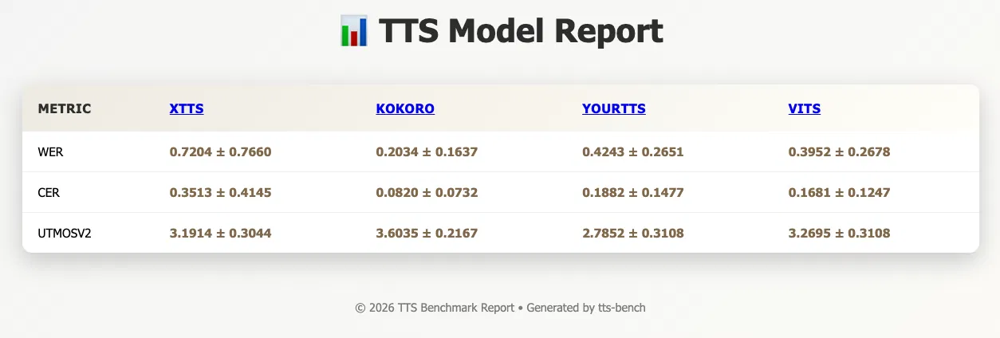
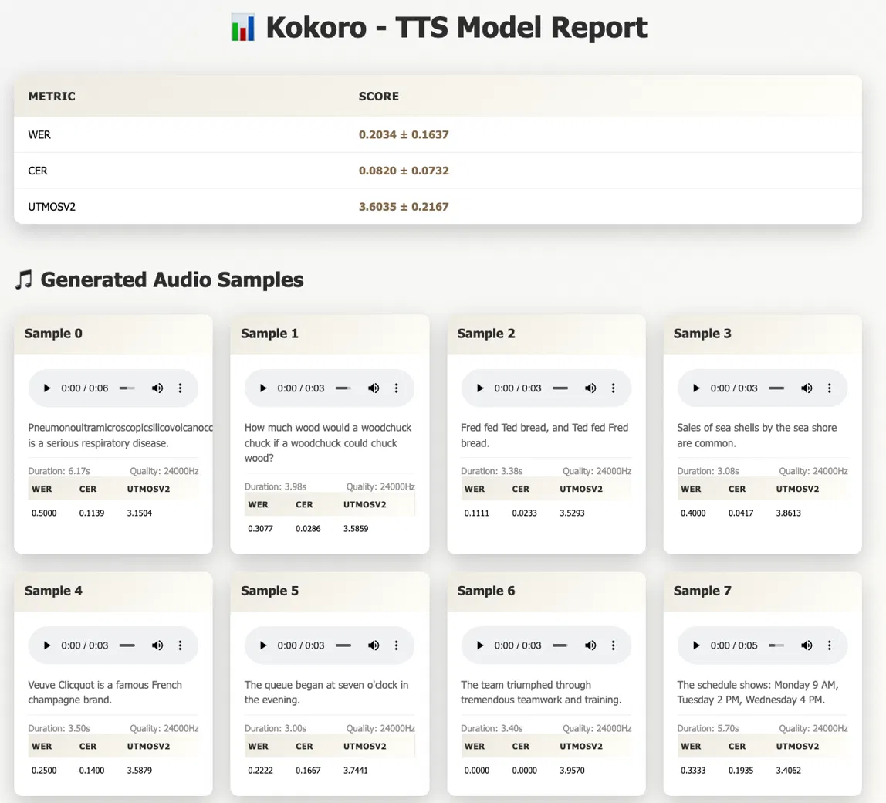

A modern, batteries-included evaluation library for open-source and API-based Text-to-Speech models. It provides a unified interface to benchmark models, pick metrics, and generate human-readable reports.
Package: pypi.org/project/tts-bench
Project page: Example of running tts-bench

